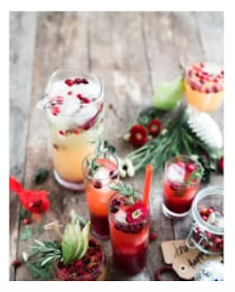

|  | Once I stepped inside the restaurant I automatically could hear the music playing at a moderate level and the laughter of the customers. Right off the back the restaurant's ambiance had a positive vibe. Mindful, it was a Saturday late afternoon. Mary Jane Burger and Brew is a local restaurant trying to stay true to its past. The granddaughter of the original owner now runs the place with the intention of serving good quality food where the ingredients are fresh, mouth watering, and surely not filled with antibiotics and all that other genetically modified elements found in processed foods. The vintage, rustic looking place, holds a small town atmosphere with a big taste. |